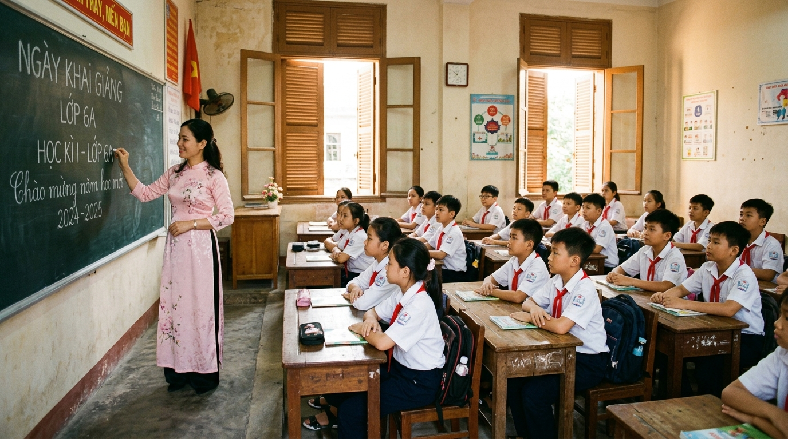

Lớp 6
Ngày đầu tiên gặp cô
Chào mừng ngày
Dành tặng cô – người đã để lại trong con
những bài học không chỉ nằm trên trang sách.
Có những người thầy không chỉ trao cho học trò kiến thức, mà còn giúp ta tin vào chính mình, kiên trì và vươn tới những ước mơ lớn hơn.
Cô không chỉ đứng trên bục giảng để truyền thụ từng trang sách — cô còn là người dắt dẫn, đồng hành và thắp sáng ngọn lửa niềm tin trong mỗi học trò.
Với con, cô là một người như thế...
"Người thầy ảnh hưởng đến cõi đời đời; không ai có thể biết được ảnh hưởng đó chấm dứt nơi đâu."
— Henry Brooks Adams
Hành trình từng năm học — Mỗi khoảnh khắc là một trang ký ức không thể nào quên
Con vừa trải qua kỳ thi học sinh giỏi với bao nhiệt huyết,
nhưng kết quả chưa như mong muốn.
Và điều khiến con thêm mạnh mẽ...
là cô vẫn ở đó, tin tưởng và động viên con.
Cảm ơn cô, vì niềm tin ấy!

vào chính mình
để cố gắng hơn

trong hành trình cuộc sống
“Cảm ơn cô vì đã luôn tin vào con,
kể cả những lúc con chưa thể tin vào chính mình.”
Kính tặng cô Lê Thị Bình
— Phan Thế Nam —
“Nghề giáo là nghề cao quý nhất trong những nghề cao quý, sáng tạo nhất trong những nghề sáng tạo.”